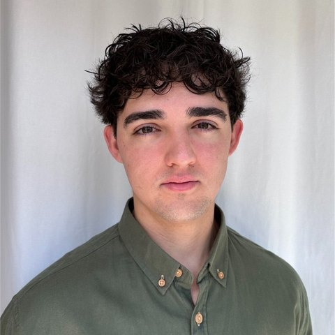

Miami Marathon
17-week plan with two gym days a week. Previous marathon: Elche-Alicante in 3:42.
Data Engineer · BI & Power BI · Python / PHP Developer · MSc Data Science & AI
Computer engineer and data scientist. I build internal tools that turn messy operational data into decisions: price intelligence across seven sales channels, profit and break-even reports, stock control and warehouse reconciliation.
I moved from Spain to Florida in 2026 to join Electriduct, a cable management company, where software development and data work are the same job. Before that I spent four years as a systems engineer at Cableworld, and I'm a member of Spain's national body of court IT expert witnesses.

Click or press Enter to flip
Every port is a tool I use in production or in my own projects. Pick one to see where it's wired in.
Each project as a case: the problem, what I built and what changed. Sketches are illustrative, with anonymized numbers.
Roles and education, most recent first.
of manual comparison saved each time a tool runs
SKUs compared across 7 sales channels
direct calls a month tracked in my RingCentral dashboard
loan records modeled for credit risk in my MSc thesis
17-week plan with two gym days a week. Previous marathon: Elche-Alicante in 3:42.
Designed and shipped in a few hours with AI. The avatar wears clothes from my own digitized wardrobe.
Open to remote data engineering and BI roles.
adepas.lo@gmail.com+1 954 312 8732